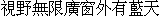

字样资料 / RichWin 4.2 宋体
RichWin 4.2 宋体 · 16×16
GB2312汉字6,763全有；基本Big5汉字13,060/13,061，缺褋，另2兼容汉字。基础有效13,062原码／唯一Unicode、13,061物理槽；一级5,401、二级7,651、符号区另10汉字。7个CP950解释扩展另列。十／卅符号区别名未在三件范围，不等于汉字本身缺失；所选三RSF无普通ASCII，整系统其他ASCII／符号层未核。 · 16×16 · 简体、繁体
放大观察 · 3×

原尺寸 · 1×
拉丁字符／符号缺字：空格、!、"、#、$、%、&、'、(、)、*、+、,、-、.、/、0、1、2、3、4、5、6、7、8、9、:、;、<、=、>、?、@、A、B、C、D、E、F、G、H、I、J、K、L、M、N、O、P、Q、R、S、T、U、V、W、X、Y、Z、[、\、]、^、_、`、a、b、c、d、e、f、g、h、i、j、k、l、m、n、o、p、q、r、s、t、u、v、w、x、y、z、{、|、}、~。对应位置留空，不借用其他字体补齐。
来源与字样信息
- 家族
- RichWin 4.2 宋体
- 排版说明
- 只绘視野無限廣窗外有藍天，原逗号／句号目标在本三件范围外，未补借。固定单行透明160×16／4×640×64，4E1＋6GB、0E2；完整16×16框不裁边不移位。无额外字距，4×仅整数复制；不证明原运行时字进或基线。
- 字符框
- 16×16 px
- 字符范围
- 简体、繁体
- 样本文字
- 視野無限廣窗外有藍天
- 覆盖说明
- GB2312汉字6,763全有；基本Big5汉字13,060/13,061，缺褋，另2兼容汉字。基础有效13,062原码／唯一Unicode、13,061物理槽；一级5,401、二级7,651、符号区另10汉字。7个CP950解释扩展另列。十／卅符号区别名未在三件范围，不等于汉字本身缺失；所选三RSF无普通ASCII，整系统其他ASCII／符号层未核。
- 缺字
- 拉丁字符／符号缺字：空格、!、"、#、$、%、&、'、(、)、*、+、,、-、.、/、0、1、2、3、4、5、6、7、8、9、:、;、<、=、>、?、@、A、B、C、D、E、F、G、H、I、J、K、L、M、N、O、P、Q、R、S、T、U、V、W、X、Y、Z、[、\、]、^、_、`、a、b、c、d、e、f、g、h、i、j、k、l、m、n、o、p、q、r、s、t、u、v、w、x、y、z、{、|、}、~。对应位置留空，不借用其他字体补齐。
- 样张类型
- 原系统同family三段宋体16×16组合；固定10汉字，4字E1＋6字GB，未使用E2字，三件不含本句标点或ASCII，不借补。
- 风格
- 宋体
- 用途
- 操作系统
- 字形来源
- 原安装文字RichWin 4.2，镜像目录名rw421／4.21分列；1995文件日期非设计年。GB16ST.RSF、CBST16E1.RSF、CBST16E2.RSF由原RSE头、INI及FONTDRV／FONTMAN／WSENGINE／WSECODEM静态链证为同一宋体16×16的互补层，不是研究者另配两套繁体库。未运行原系统，不称全部手绘或原创。
- 授权状态
- 未确认开放再分发授权
- 许可说明
- 第三方保存和SHA核验不等于开放许可。仅固定预览、聚合事实和无字模离线工具；不公开原包、RSF、DLL、完整字库、字模数组、诊断全表或任意文字子集。
- 说明
- GB基部对Beijing16高度复用，旧GB全6,763中6,734墨迹精确；本次Big5所用GB共同4,382中4,362精确、均Dice0.999679。扩展E1/E2与三星R208显著近形：8,676共同Unicode中1,026裁外空白后完整墨迹精确、均Dice0.888464、4,711≥0.90／3,540≥0.95；1,026中仅82原16×16框逐像素同。raw原槽4,739／3,542／1,026单列，不混同码分母或推复制方向。303条限定同码控制及60个限定原槽池不是全历史穷尽，12项旧缺口、条件和有限池范围保留，整体不称低重复。保留原麼→GB麽、兀与兀共槽、惚从E2及褋前向缺字，不改映射。
- 获取方式
自行取得有权处理且大小／SHA匹配的本地三RSF。工具只重绘固定十汉字1×／4×PNG，不联网、不执行旧程序、不接受任意文本、不导出完整字体。
- 来源
- 中文DOS软件保存目录（RichWin rw421）
- 原生证据
说明：三RSF原RSE头及四DLL静态字体选择链已独立核验；三源20,907槽、5,352,192像素及原码映射有独立研究证据。固定重绘工具只校三源身份并读取十字，不执行全部字库比较。
sourceFiles：name：GB16ST.RSF；bytes：216664；sha256：e210c3c3edc359bf9bfd7ffc664946f794962ae85f433e7841225c9b3339933e、name：CBST16E1.RSF；bytes：75352；sha256：562a48053bcfe87d53fa8f9e5a9a37c7fb18c95502bebe697ceb2aec993cde5d、name：CBST16E2.RSF；bytes：377272；sha256：f9ff7bd921947fb44600d241a67662b4ccfae70fd2bc0a5f97b36140fe39c46a
physicalSlots：20907
nonblankSlots：20902
bitDepth：1
gb2312Han：6763
big5Han：13060
big5ExpectedHan：13061
big5Missing：褋
compatibilityHan：2
basicBig5EffectiveRecords：13062
cp950AdditionalHan：7
printableAscii：0
asciiScope：仅本条三RSF；整系统其他ASCII／符号层未核，不推断整系统没有。
systemAsciiCoverage：
punctuationOmitted：，、。
previewLayerCounts：GB：6；E1：4；E2：0
runtimeAdvance：
runtimeBaseline：
查看原生设计来源
字体使用与再分发按原来源许可执行。